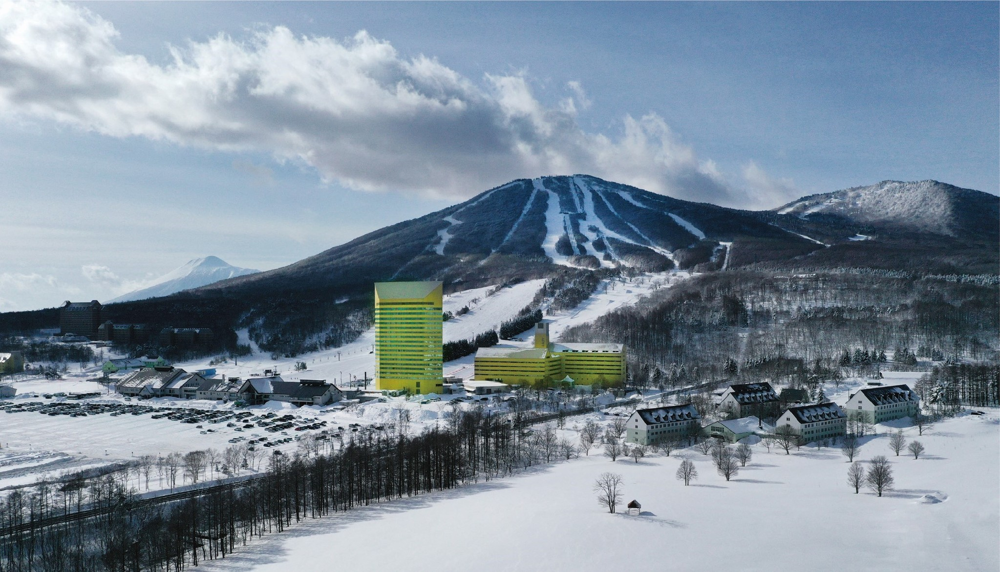
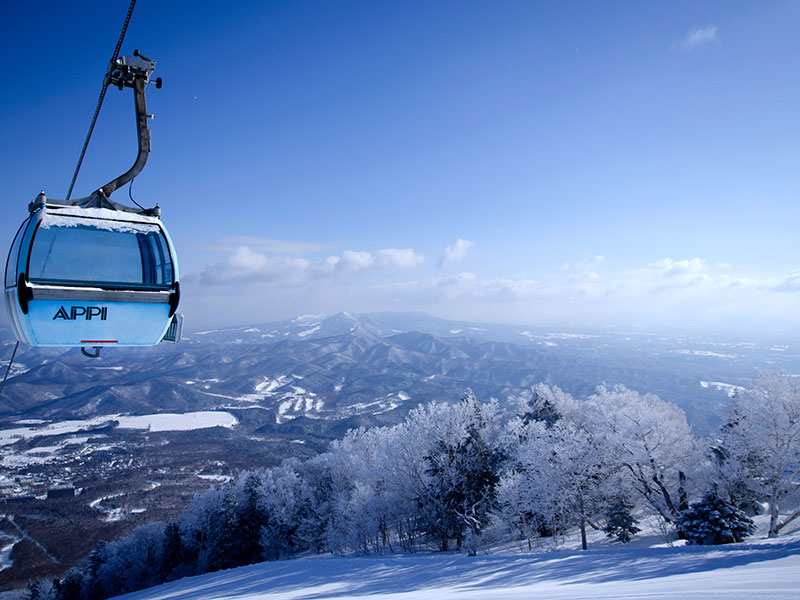

安比高原


安比高原スキー場は、岩手県八幡平市にある日本有数の規模を誇る
スキー場です。極上の雪質と徹底したゲレンデメンテナンスの
おかげでで満喫できること間違いなし。例年12月上旬から5月上旬
まで滑ることが可能です。スキー場の他にもゴルフクラブや牧場
など、オールシーズンで楽しむことができます。
観光情報
ジャンル : 観光スポット
所在地 : 岩手県八幡平市安比高原117-1
電話番号 : 0195-73-5111
定休日 : 年中無休
営業時間 :
オンシーズン：月～土曜8時30分～20時、日曜・祝日8～20時
初滑り・春スキー期間：全日8時30分～16時
料金 :
1日券: 大人5600円、シニア3900円、小中高3300円
5時間券: 大人5300円、シニア3600円、小中高3000円
ナイター券 : 大人2200円、シニア1700円、小中高1500円
[アクセス経路]
新花巻駅から車で3分、花巻駅から車で15分
JR新花巻駅よりバスで2分（JR花巻駅よりバスで17分）、土沢線｢賢治記念館口｣
バス停下車後徒歩5分